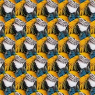

हेक्सागन टाइलिंग

लेयर के बीच के हिस्से को हेक्सागन टाइल्स में दोहराता है जो पूरी स्क्रीन भर देते हैं।
सेटिंग्स
| सेटिंग | प्रकार | रेंज | डिफ़ॉल्ट |
|---|---|---|---|
| स्केल | संख्या | 0.05 से 10 | 1 |
| एंगल | एंगल | -3600° से 3600° | 0° |
| मिरर | चालू या बंद | – | बंद |
| तस्वीर | विकल्प | पूरा आकार, हर टाइल में | पूरा आकार |
| क्रॉप | संख्या | 0.1 से 10 | 1 |
| स्ट्रेच | पॉइंट (X, Y) | 0.01 से 10 | 1, 1 |
| ऑफ़सेट | पॉइंट (X, Y) | -5000 px से 5000 px | 0 px, 0 px |
| स्क्रीन स्पेस | चालू या बंद | – | बंद |
| लेयर पर मास्क | चालू या बंद | – | बंद |